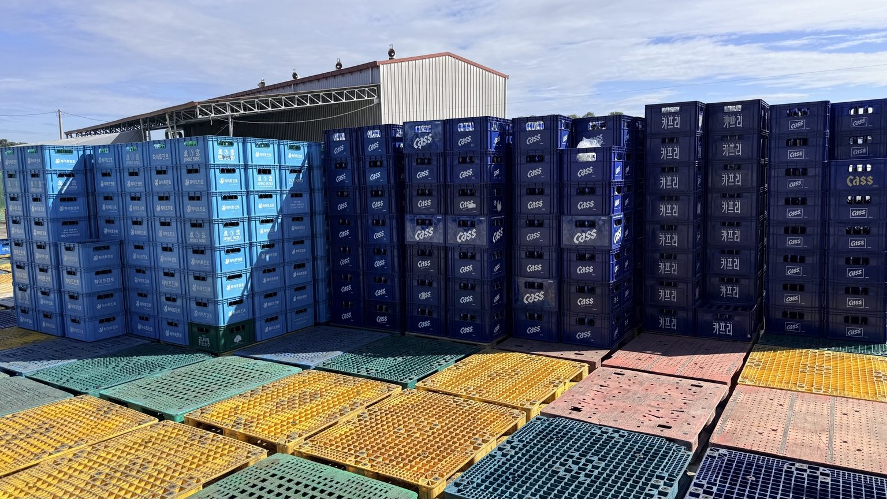
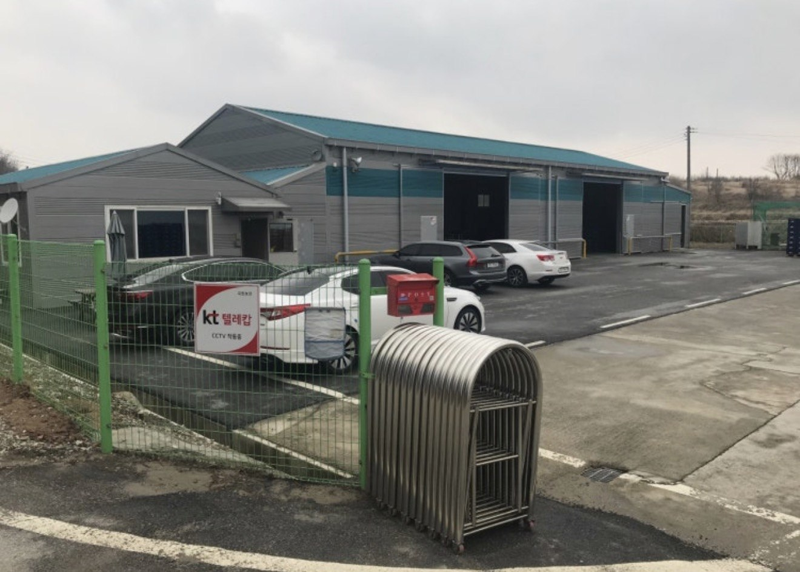
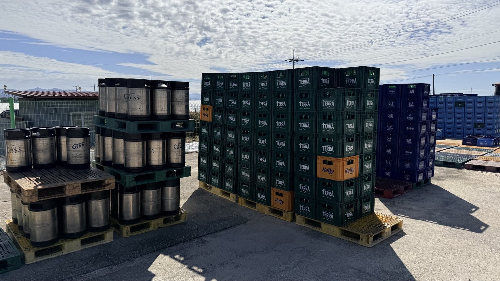
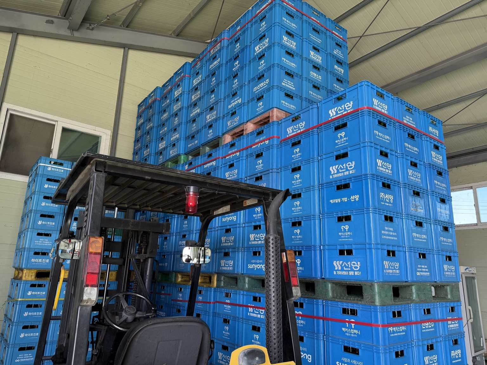
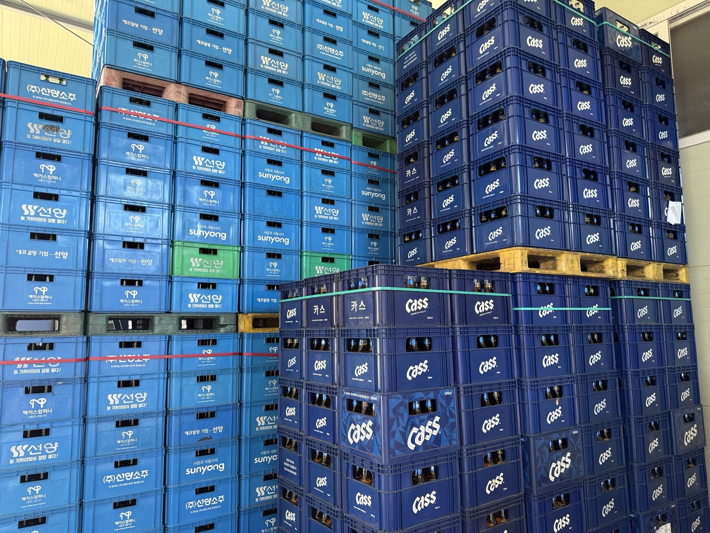
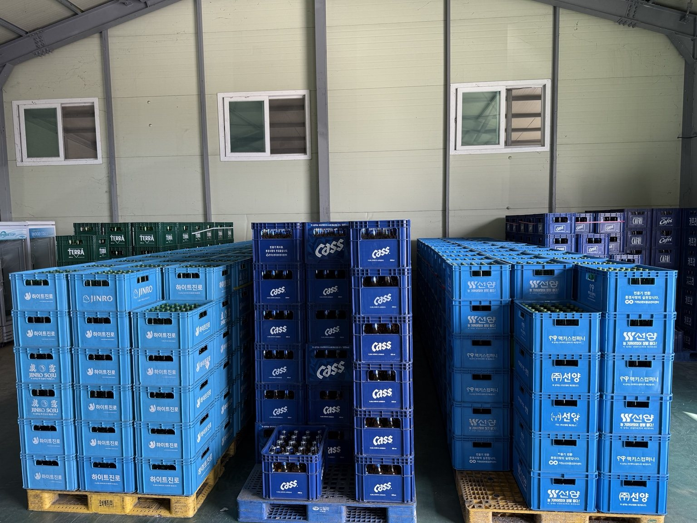
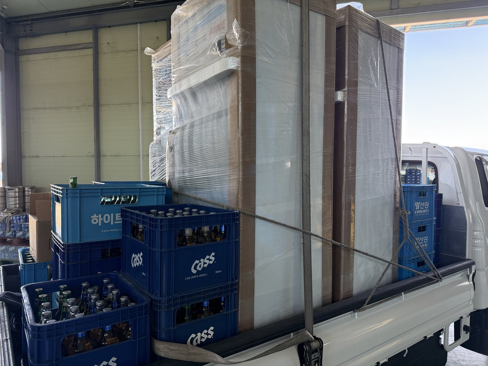
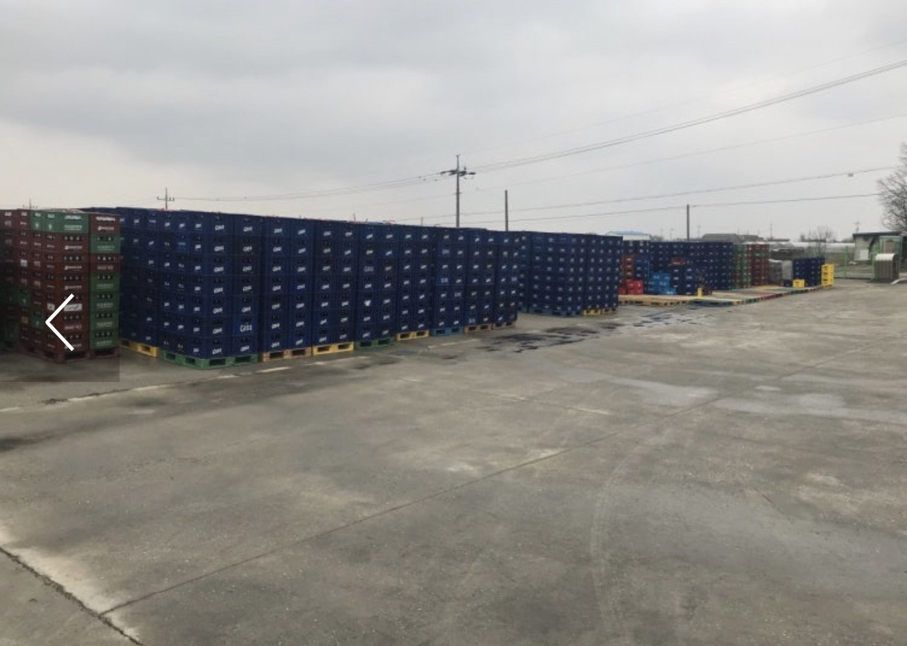

01 / WHOLESALE
종합주류도매
논산 소재 종합주류도매업체의 사업 및 회사 정보를 안내합니다.
맥주·소주 등 주류 상자와 물류 현장으로 소개하는
(자)엔에스주류를 소개합니다.
주류도매 및 사업자 거래 관련 문의를 안내합니다.

엔에스주류의 실제 사업장과 맥주·소주 상자 적재, 창고 및 물류 현장 사진입니다.







엔에스주류는 충청남도 논산시에 위치한 종합주류도매업체입니다. 구체적인 취급 품목과 납품 가능 지역, 거래 조건은 전화로 문의해 주세요.
논산 소재 종합주류도매업체의 사업 및 회사 정보를 안내합니다.
사업장 건물과 주류 상자 적재 공간을 사진으로 확인하실 수 있습니다.
주류도매 및 납품 관련 상담은 대표전화로 연락해 주세요.
거래 문의 또는 방문이 필요하시면 대표전화로 먼저 연락해 주세요.